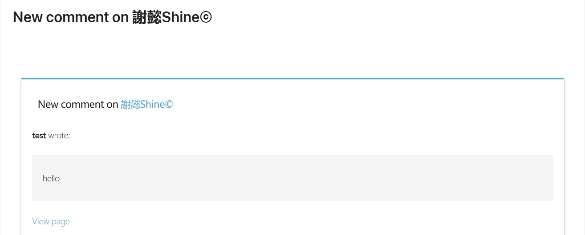
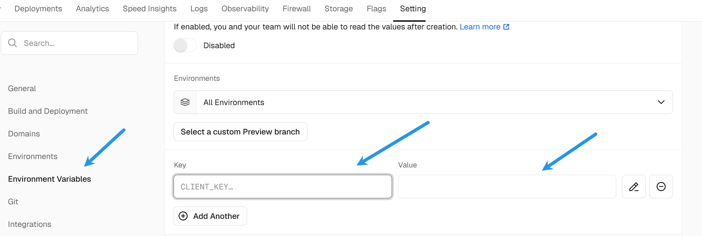
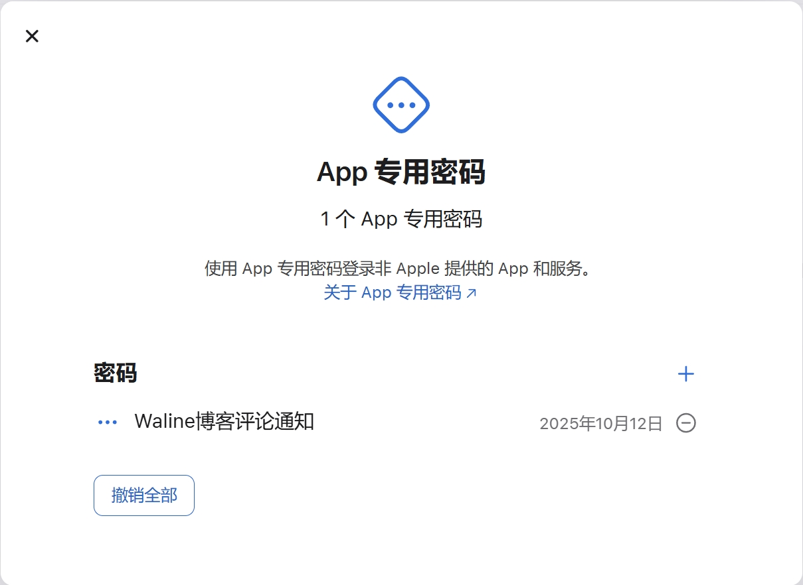
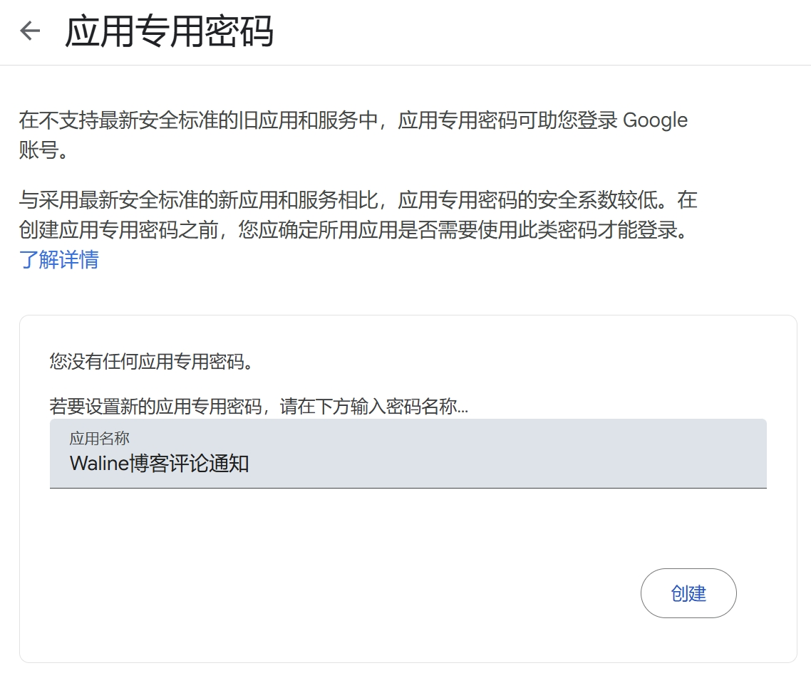

使用 Waline 实现 iCloud 和 Gmail 邮件通知的完整配置教程
Waline 是一款轻量级且高度可定制的评论系统，自带邮件通知功能可以有效提升用户互动体验。本文将分享如何配置 Apple 的 iCloud 邮箱和 Google 的 Gmail 邮箱，实现可靠且专业的邮件通知。

环境准备
- 已完成 Waline 评论系统搭建
- 具备 iCloud 邮箱账号
- 具备 Gmail 邮箱账号
- 有能力修改项目环境变量并重新部署 (在 Vercel 中配置)

一、iCloud 邮箱邮件通知配置
1. iCloud SMTP 配置参数
| 参数 | 示例 | 说明 |
|---|---|---|
| SMTP_HOST | smtp.mail.me.com | iCloud SMTP 服务器地址 |
| SMTP_PORT | 587 | 使用现代标准 587 端口（STARTTLS） |
| SMTP_SECURE | false | 587 端口需设为 false，使用 STARTTLS |
| SMTP_USER | user@example.com | iCloud 邮箱地址 |
| SMTP_PASS | 应用专用密码 | 非邮箱登录密码，需生成应用专用密码 |
| SITE_NAME | 你的网站名称 | 网站名称，用于邮件内容显示 |
| SITE_URL | https://你的站点域名.com | 网站网址，用于邮件内容链接 |
| AUTHOR_EMAIL | user@example.com | 博主邮箱，接收新评论通知 |
| SENDER_NAME | 博客通知 | 自定义邮件发件人名称 |
| SENDER_EMAIL | user@example.com | 自定义邮件发件地址 |
注意：iCloud 需要使用 “应用专用密码” 代替登录密码，确保 SMTP 认证成功。
2. 应用专用密码获取方式
- 访问 Apple's Apple ID 账户页面
- 开启两步验证或双因素认证
- 生成新的应用专用密码，复制用于
SMTP_PASS
3. 重要说明
SMTP_SECURE需设置为false，因为 587 端口使用 STARTTLS，非直接 SSL 连接。- 使用 465 端口时，需要设置
SMTP_SECURE=true，但会导致部分云平台连接失败。
二、Gmail 邮箱邮件通知配置
1. Gmail SMTP 配置参数
| 参数 | 示例 | 说明 |
|---|---|---|
| SMTP_SERVICE | Gmail | 使用 Nodemailer 支持的服务 |
| SMTP_USER | user@example.com | Gmail 邮箱地址 |
| SMTP_PASS | 应用专用密码 | Gmail 应用专用密码，需要另行生成 |
| SITE_NAME | 网站名称 | 网站名称，用于邮件内容显示 |
| SITE_URL | https://你的站点域名.com | 网站网址，用于邮件内容链接 |
| AUTHOR_EMAIL | user@example.com | 博主邮箱，接收新评论通知 |
2. 应用专用密码获取方式
- 登录 Google 账户，进入 应用专用密码页面
- 为你的 Waline 服务生成应用专用密码
- 将生成的密码填入
SMTP_PASS
3. Gmail 配置要点
- 推荐通过环境变量指定
SMTP_SERVICE=Gmail，简化配置 - 确保开启 Gmail “允许安全性较低的应用”或启用两步验证并使用应用专用密码
三、Waline 环境变量配置示例
# iCloud 配置（使用587端口）
SMTP_HOST=smtp.mail.me.com
SMTP_PORT=587
SMTP_SECURE=false
SMTP_USER=user@example.com
SMTP_PASS=你的应用专用密码
SITE_NAME=MyBlog
SITE_URL=https://myblog.com
AUTHOR_EMAIL=user@example.com
SENDER_NAME=MyBlog通知
SENDER_EMAIL=user@example.com
# Gmail 配置
SMTP_SERVICE=Gmail
SMTP_USER=user@example.com
SMTP_PASS=你的Gmail应用专用密码
SITE_NAME=MyBlog
SITE_URL=https://myblog.com
AUTHOR_EMAIL=user@example.com
四、部署与验证
- 设置环境变量后，在项目平台（如 Vercel）重新部署应用。
- 使用非博主邮箱发表评论，验证是否能成功发送邮件通知。
- 检查收件箱及垃圾邮件，确认邮件是否到达。
- 如邮件被误判为垃圾邮件，加入白名单。
五、常见问题与解决方案
| 问题 | 解决方案 |
|---|---|
SMTP 连接报错 wrong version number |
关闭 SSL 开启 STARTTLS，即设置 SMTP_SECURE=false 和端口 587 |
| 邮件发送成功但收不到邮件 | 检查垃圾邮件箱，添加发件人至白名单 |
| 认证失败 | 使用正确的应用专用密码替换登录密码 |
| 465 端口连接超时 | 改用 587 端口并关闭直接 SSL (SMTP_SECURE=false) |